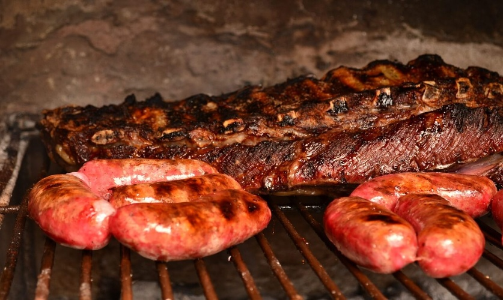

Bienvenid@ a MiARG
Este es un espacio pensado para que conozcas todo lo que hace única a la Argentina: su historia, sus costumbres, sus paisajes, su gente y mucho más. La idea es que puedas encontrar información clara y sencilla, como si estuvieras charlando con un amigo que te cuenta sobre el país. Ya sea que quieras aprender algo nuevo, investigar para la escuela o simplemente tengas curiosidad, acá vas a encontrar un lugar para descubrir y disfrutar.
